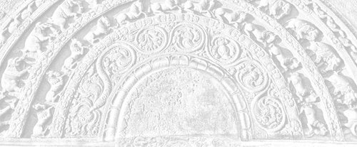

Sermon 5
Namo tassa bhagavato arahato sammāsambuddhassa
Namo tassa bhagavato arahato sammāsambuddhassa
Namo tassa bhagavato arahato sammāsambuddhassaEtaṁ santaṁ, etaṁ paṇītaṁ,
yadidaṁ sabbasaṅkhārasamatho sabbūpadhipaṭinissaggo
taṇhakkhayo virāgo nirodho nibbānaṁ.1“This is peaceful, this is excellent,
namely the stilling of all preparations, the relinquishment of all assets,
the destruction of craving, detachment, cessation, extinction.”
With the permission of the Most Venerable Great Preceptor and the assembly of the venerable meditative monks.
Towards the end of our last sermon, we discussed, to some extent, a special mode of attention, regarding the four objects of contemplation in the Satipaṭṭhānasutta – body, feelings, mind, and mind-objects.2 That discussion might have revealed a certain middle path indicated by the Buddha.
We drew attention to a thematic paragraph, occurring throughout the Satipaṭṭhānasutta, which outlines a method of using objects and concepts for satipaṭṭhāna meditation without dogmatic involvement. This leads the meditator to a particular kind of attitude, summed up by the concluding phrase:
He abides independent and does not cling to anything in the world,
anissito ca viharati, na ca kiñci loke upādiyati.3
By way of clarification, we brought in the simile of a scaffolding for a building, that here the concepts only serve as a scaffolding for building up mindfulness and knowledge.4
Talking about the scaffolding, we are reminded of two different attitudes, namely, the attitude of leaning on to and dwelling in the scaffolding itself, and the enlightened attitude of merely utilizing it for the purpose of erecting a building.
For further explanation of this technique, we may take up the two terms parāmasana and sammasana. It might be better to distinguish the meanings of these two terms also with the help of a simile. As for a simile, let us take up the razor, which is such a useful requisite in our meditative life. There is a certain special way in sharpening a razor. With the idea of sharpening the razor, if one grabs it tightly and rubs it on the sharpening stone, it will only become blunt. Parāmasana, grasping, grabbing, is something like that.
What then is the alternative? A more refined and softer approach is required as meant by the term sammasana. There is a proper mode of doing it. One has to hold the razor in a relaxed way, as if one is going to throw it away. One holds it lightly, ready to let go of it at any time. But, of course, with mindfulness. The wrist, also, is not rigid, but relaxed. Hand is supple at the joints and easy to swing. Then with that readiness, one sharpens the razor, sliding it smoothly on the stone. First: up, up, up, then: down, down, down, and then: up down, up down, up down. The third combined movement ensures that those parts of the blade still untouched by the stone will also get duly sharpened.
It is in the same manner that the razor of insight wisdom has to be whetted on the sharpening stone of the Satipaṭṭhānasutta. Inward, inward, inward – outward, outward, outward – inward outward, inward outward. Or else: arising, arising, arising – ceasing, ceasing, ceasing – arising ceasing, arising ceasing.
This is an illustration for the method of reflection, or sammasana, introduced by the Buddha in the Satipaṭṭhānasutta. Words and concepts have to be made use of, for attaining Nibbāna. But here the aim is only the up-building of mindfulness and knowledge. Once their purpose is served, they can be dismantled without being a bother to the mind. This is the significance of the concluding phrase “He abides independent and does not cling to anything in the world”.5
There is another sutta in which the Buddha has touched upon this same point in particular. It is the Samudayasutta in the Satipaṭṭhānasaṁyutta of the Saṁyutta Nikāya. In that sutta, the Buddha has proclaimed the arising and the going down of the four foundations of mindfulness. He begins by saying:
Monks, I shall teach you the arising and the going down of the four foundations of mindfulness.
Catunnaṁ, bhikkhave, satipaṭṭhānānaṁ samudayañca atthagamañca desessāmi.6
He goes on to say:
Ko ca, bhikkhave, kāyassa samudayo? Āhārasamudayā kāyassa samudayo, āhāranirodhā kāyassa atthagamo.
What, monks, is the arising of the body? With the arising of nutriment is the arising of the body and with the cessation of the nutriment is the going down of the body.
Similarly:
Phassasamudayā vedanānaṁ samudayo, phassanirodhā vedanānaṁ atthagamo.
With the arising of contact is the arising of feeling, and with the cessation of contact is the going down of feeling.
And then:
Nāmarūpasamudayā cittassa samudayo, nāmarūpanirodhā cittassa atthagamo.
With the arising of name-and-form is the arising of the mind, and with the cessation of name-and-form is the going down of the mind.
And lastly:
Manasikārasamudayā dhammānaṁ samudayo, manasikāranirodhā dhammānaṁ atthagamo.
With the arising of attention is the arising of mind-objects, and with the ceasing of attention is the going down of mind-objects.
This, too, is an important discourse, well worth remembering, because here the Buddha is dealing with the arising and cessation, or arising and going down, of the four objects used for establishing mindfulness.
As we know, the concept of nutriment in this Dhamma is much broader than the worldly concept of food. It does not imply merely the ordinary food, for which the term used is kabaliṅkārāhāra, or material food. Taken in a deeper sense, it includes the other three kinds of nutriment as well, namely phassa, or contact, manosañcetanā, or volition, and viññāṇa, or consciousness. These four together account for the concept of body as such. Therefore, due to these four there comes to be a body, and with their cessation the body ends. So also in the case of feeling. We all know that the arising of feeling is due to contact.
The reference to name-and-form in this context might not be clear enough at once, due to various definitions of name-and-form, or nāma-rūpa. Here, the reason for the arising of the mind is said to be name-and-form. Mind is said to arise because of name-and-form, and it is supposed to go down with the cessation of name-and-form.
The fact that the mind-objects arise due to attention is noteworthy. All the mind-objects mentioned in the fourth section of contemplation arise when there is attention. And they go down when attention is not there. In other words, attending makes objects out of them. This way, we are reminded that, apart from making use of these words and concepts for the purpose of attaining Nibbāna, there is nothing worth holding on to or clinging to dogmatically. So if a meditator works with this aim in mind, he will be assured of a state of mind that is independent and clinging-free, anissita, anupādāna.
One marvellous quality of the Buddha’s teaching emerges from this discussion. A mind-object is something that the mind hangs on to as the connotations of the word ārammaṇa (cp. ālambhana) suggest. But because of the mode of insight wisdom outlined here, because of the middle path approach, even the tendency to ‘hang-on’ is finally done away with and the object is penetrated through. Despite the above connotations of ‘hanging on’ (ārammaṇa), the object is transcended. Transcendence in its highest sense is not a case of surpassing, as is ordinarily understood. Instead of leaving behind, it penetrates through. Here then, we have a transcendence that is in itself a penetration.
So the terms anissita and anupādāna seem to have a significance of their own. More of it comes to light in quite a number of other suttas. Particularly in the Dvayatānupassanāsutta of the Sutta Nipāta we come across the following two verses, which throw more light on these two terms:
Anissito na calati,
nissito ca upādiyaṁ,
itthabhāvaññathābhāvaṁ,
saṁsāraṁ nātivattati.Etam ādīnavaṁ ñatvā,
nissayesu mahabbhayaṁ,
anissito anupādāno,
sato bhikkhu paribbaje.7The unattached one wavers not,
But the one attached, clinging on,
Does not get beyond saṁsāra,
Which is an alternation between a this-ness and an otherwise-ness.Knowing this peril,
The great danger, in attachments or supports
Let the monk fare along mindfully,
Resting on nothing, clinging to nothing.
Caught up in the dichotomy of saṁsāric existence, which alternates between this-ness and otherwise-ness, one is unable to transcend it, so long as there is attachment and clinging. Nissayas are the supports that encourage clinging in the form of dogmatic adherence to views. Seeing the peril and the danger in them, a mindful monk has no recourse to them. This gives one an idea of the attitude of an arahant. His mind is free from enslavement to the conjoined pairs of relative concepts.
This fact is borne out by certain Canonical statements, which at first sight might appear as riddles. The two last sections of the Sutta Nipāta, the Aṭṭhakavagga and the Pārāyanavagga in particular, contain verses which are extremely deep. In the Aṭṭhakavagga, one often comes across apparently contradictory pairs of terms, side by side. About the arahant it is said that:
he neither grasps nor gives up,
nādeti na nirassati.8
There is nothing taken up or rejected by him,
attaṁ nirattaṁ na hi tassa atthi.9
By the way, the word attaṁ in this context is derived from ādātta (ā + dā), by syncopation. It should not be mistaken as a reference to attā, or soul. Similarly, niratta is from as, to throw, nirasta, conveying the idea of giving up or putting down.
There is nothing taken up or given up by the arahant. Other such references to the arahant’s attitude are:
Na rāgarāgī na virāgaratto,
He is neither attached to attachment, nor attached to detachment.10
Na hi so rajjati no virajjati,
He is neither attached nor detached.11
It is in order to explain why such references are used that we took all this trouble to discuss at length the significance of such terms as nissaya.12 Probably due to a lack of understanding in this respect, the deeper meanings of such suttas have got obscured. Not only that, even textual corruption through distorted variant readings has set in, because they appeared like riddles. However, the deeper sense of these suttas sometimes emerges from certain strikingly strange statements like the following found in the Khajjanīyasutta of the Saṁyutta Nikāya. The reference here is to the arahant.
Ayaṁ vuccati, bhikkhave, bhikkhu neva ācināti na apacināti, apacinitvā ṭhito neva pajahati na upādiyati, pajahitvā ṭhito neva viseneti na usseneti, visenetvā ṭhito neva vidhūpeti na sandhūpeti.13
Monks, such a monk is called one who neither amasses nor diminishes; already diminished as he is, he neither gives up nor grasps; already given up as he is, he neither disbands nor binds together; already disbanded as he is, he neither exorcizes nor proficiates.
Even to one who does not understand the language, the above quotation would sound enigmatic. Even the rendering of the terms used here is not an easy matter, because of the nuances they seem to convey.
We could perhaps say that such a monk neither amasses or accumulates, nor diminishes. Since he is already diminished, presumably as regards the five aggregates, he neither abandons nor grasps anew. Since the giving up is complete, he neither binds together or enlists (note the word sena, army), nor disbands. Disbanding (if not ‘disarmament’), being complete, there is neither exorcizing or smoking out, nor proficiating or inviting. The coupling of these terms and their peculiar employment is suggestive of the arahant’s freedom from the dichotomy.
In the Brāhmaṇavagga of the Dhammapada too, we come across a similar enigmatic verse:
Yassa pāraṁ apāraṁ vā,
pārāpāraṁ na vijjati,
vītaddaraṁ visaṁyuttaṁ,
tam ahaṁ brūmi brāhmaṇaṁ.14For whom there is neither a farther shore,
Nor a hither shore, nor both,
Who is undistressed and unfettered,
Him I call a Brahmin.
In this context the word brāhmaṇa refers to the arahant. Here too, it is said that the arahant has neither a farther shore, nor a hither shore, nor both. This might sometimes appear as a problem. Our usual concept of an arahant is of one who has crossed over the ocean of saṁsāra and is standing on the other shore. But here is something enigmatic.
We come across a similar sutta in the Sutta Nipāta also, namely its very first, the Uragasutta. The extraordinary feature of this sutta is the recurrence of the same refrain throughout its seventeen verses. The refrain is:
So bhikkhu jahāti orapāraṁ,
urago jiṇṇamiva tacaṁ purāṇaṁ.15That monk forsakes the hither and the tither,
Like a snake its slough that doth wither.
This simile of the slough, or the worn-out skin of the snake, is highly significant. To quote one instance:
Yo nājjhagamā bhavesu sāraṁ,
vicinaṁ pupphamiva udumbaresu,
so bhikkhu jahāti orapāraṁ,
urago jiṇṇamiva tacaṁ purāṇaṁ.16That monk who sees no essence in existence,
Like one seeking flowers in Udumbara trees,
Will give up the hither as well as the thither,
Like the snake its slough that doth wither.
The arahant has abandoned his attachment to existence. As such, he is free from the bondage of those conjoined terms in worldly usage. So the arahant looks at the worldly usage in the same way as a snake would turn back and look at the worn-out skin he has sloughed off. Sometimes we see a snake moving about with a remnant of its slough hanging on. We might even think that the snake is carrying its slough around. It is the same in the case of the arahants.
Now there is this term sa-upādisesa Nibbāna dhātu. Taking the term at its face value, some might think that the clinging is not yet over for the arahants – that there is still a little bit left.
The arahant, though he has attained release and realized Nibbāna, so long as he is living in the world, has to relate to the external objects in the world somehow through his five senses, making use of them. Seeing it, some might conclude that it is because of some residual clinging. But we have to understand this in the light of the simile of the worn-out skin. In the case of the arahant, too, the sloughed off skin is still hanging on.
As a sidelight we may cite a remark of Venerable Sāriputta:
Iminā pūtikāyena aṭṭiyāmi harāyāmi jigucchāmi,17
I am harassed and repelled by this body, I am ashamed of it.
This is because the body is for him something already abandoned. All this goes to show that the arahant has an unattached, unclinging attitude.
Linguistic usage, which is a special feature of existence, is enlivened by the cravings, conceits, and views with which it is grasped. Worldlings thrive on it, whereas the arahants are free from it. This is the upshot of the above discussion on the terms anusaya and nissaya.18
Yet another important term that should receive attention in any discussion on Nibbāna is āsava. This is because the arahant is often called a khīṇāsava, one whose āsavas are extinct.19 Āsavakkhayo, extinction of āsavas, is an epithet of Nibbāna.20 So the distinct feature of an arahant is his extinction of āsavas.
Now, what does āsava mean? In ordinary life, this word is used to denote fermentation or liquor that has got fermented for a long time.21 If there is even a dreg of ferment in a vessel, it is enough to cause fermentation for any suitable raw material put into it. So also are the āsavas. They are like the residual dregs of the ebullient mass of defilements in beings, which have undergone fermentation for a long, long time in saṁsāra.
Very often, āsavas are said to be of three kinds, as kāmāsavā, bhavāsavā, and avijjāsavā. The term āsava in this context is usually rendered as ‘influxes’. We may understand them as certain intoxicating influences, which create a world of sense-desires, a stupor that gives a notion of existence and leads to ignorance. These influxes are often said to have the nature of infiltrating into the mind. Sometimes a fourth type of influxes, diṭṭhāsavā, is also mentioned. But this can conveniently be subsumed under avijjāsavā.
The extinction of influxes becomes a distinctive characteristic of an arahant, as it ensures complete freedom. One could be said to have attained complete freedom only if one’s mind is free from these influxes. It is because these influxes are capable of creating intoxication again and again.
The immense importance of the extinction of influxes, and how it accounts for the worthiness of an arahant, is sometimes clearly brought out. The ultimate aim of the Buddha’s teaching is one that in other systems of thought is generally regarded as attainable only after death. The Buddha, on the other hand, showed a way to its realization here and now.
As a matter of fact, even brahmins like Pokkharasāti went about saying that it is impossible for a human being to attain something supramundane:
Katham’hi nāma manussabhūto uttarimanussadhammā alamariyañāṇadassanavisesaṁ ñassati vā dakkhati vā sacchi vā karissati?22
How can one as a human being know or see or realize a supramundane state, an extraordinary knowledge and vision befitting the noble ones?
They thought that such a realization is possible only after death. Immortality, in other systems of thought, is always an after death experience.
Now the realization of the extinction of influxes, on the other hand, gives a certain assurance about the future. It is by this extinction of influxes that one wins to the certitude that there is no more birth after this. Khīṇā jāti,23 extinct is birth! Certitude about something comes only with realization. In fact, the term sacchikiriya implies a seeing with one’s own eyes, as the word for eye, akśi, is implicit in it.
However, everything cannot be verified by seeing with one’s own eyes. The Buddha has pointed out that there are four ways of realization or verification:
Cattāro me, bhikkhave, sacchikaraṇīyā dhammā. Katame cattaro?Atthi, bhikkhave, dhammā kāyena sacchikaraṇīyā; atthi, bhikkhave, dhammā satiyā sacchikaraṇīyā; atthi, bhikkhave, dhammā cakkhunā sacchikaraṇīyā; atthi, bhikkhave, dhammā paññāya sacchikaraṇīyā.24
Monks, there are these four realizable things. What four? There are things, monks, that are realizable through the body; there are things, monks, that are realizable through memory; there are things, monks, that are realizable through the eye; there are things, monks, that are realizable through wisdom.
By way of explanation, the Buddha says that the things realizable through the body are the eight deliverances, the things realizable through memory are one’s former habitations, the things realizable through the eye are the death and rebirth of beings, and what is realizable through wisdom, is the extinction of influxes.
One’s former lives cannot be seen with one’s own eyes by running into the past. It is possible only by purifying one’s memory and directing it backwards. Similarly, the death and rebirth of beings can be seen, as if with one’s fleshly eye, by the divine eye, by those who have developed it. So also the fact of extirpating all influxes is to be realized by wisdom, and not by any other means. The fact that the influxes of sensuality, existence, ignorance, and views, will not flow in again, can be verified only by wisdom. That is why special mention is made of Nibbāna as something realizable.25
Because Nibbāna is said to be something realizable, some are of the opinion that nothing should be predicated about it. What is the reason for this special emphasis on its realizability? It is to bring into sharp relief the point of divergence, since the Buddha taught a way of realizing here and now something that in other religions was considered impossible.
What was it that they regarded impossible to be realized? The cessation of existence, or bhavanirodha. How can one be certain here and now that this existence has ceased? This might sometimes appear as a big puzzle. But all the same, the arahant experiences the cessation of existence as a realization. That is why he even gives expression to it as: Bhavanirodho Nibbānaṁ,26 “cessation of existence is Nibbāna”.
It comes about by this extinction of influxes. The very existence of ‘existence’ is especially due to the flowing in of influxes of existence. What is called ‘existence’ is not the apparent process of existing visible to others. It is something that pertains to one’s own mental continuum.
For instance, when it is said that some person is in the world of sense desires, one might sometimes imagine it as living surrounded by objects of sense pleasure. But that is not always the case. It is the existence in a world of sense desires, built up by sensuous thoughts. It is the same with the realms of form and formless realms. Even those realms can be experienced and attained while living in this world itself.
Similarly, it is possible for one to realize the complete cessation of this existence while living in this very world. It is accomplished by winning to the realization that the influxes of sense desires, existence, and ignorance, no longer influence one’s mind.
So all this goes to show the high degree of importance attached to the word āsava. The Sammādiṭṭhisutta of the Majjhima Nikāya seems to pose a problem regarding the significance of this term. At one place in the sutta it is said that the arising of ignorance is due to the arising of influxes and that the cessation of ignorance is due to the cessation of influxes:
Āsavasamudayā avijjāsamudayo, āsavanirodhā avijjānirodho.27
If the sutta says only this much, it will not be such a problem, because it appears as a puzzle to many nowadays, why ignorance is placed first. Various reasons are adduced and arguments put forward as to why it is stated first out of the twelve factors. The fact that there is still something to precede it could therefore be some consolation.
But then, a little way off, in the selfsame sutta, we read:
Avijjāsamudayā āsavasamudayo, avijjanirodhā āsavanirodho,28
with the arising of ignorance is the arising of influxes, with the cessation of ignorance is the cessation of influxes.
Apparently this contradicts the previous statement. The preacher of this discourse, Venerable Sāriputta, is not one who contradicts himself. So most probably there is some deep reason behind this.
Another problem crops up, since ignorance is also counted among the different kinds of influxes. This makes our puzzle all the more deep. But this state of affairs could best be understood with the help of an illustration. It is in order to explain a certain fascinating behaviour of the mind that even arahants of great wisdom had to make seemingly contradictory statements.
We have to draw in at this juncture a very important discourse in the Saṁyutta Nikāya, which is a marvel in itself. It comes in the section on the aggregates, Khandhasaṁyutta, as the second Gaddulasutta. Here the Buddha makes the following impressive declaration:
‘Diṭṭhaṁ vo, bhikkhave, caraṇaṁ nāma cittan’ti?’ ‘Evaṁ, bhante.’ ’Tampi kho, bhikkhave, caraṇaṁ nāma cittaṁ citteneva cintitaṁ. Tenapi kho, bhikkhave, caraṇena cittena cittaññeva cittataraṁ. Tasmātiha, bhikkhave, abhikkhaṇaṁ sakaṁ cittaṁ paccavekkhitabbaṁ: Dīgharattam idaṁ cittaṁ saṁkiliṭṭhaṁ rāgena dosena mohenā’ti. Cittasaṁkilesā, bhikkhave, sattā saṁkilissanti, cittavodānā sattā visujjhanti.
Nāhaṁ, bhikkhave, aññaṁ ekanikāyampi samanupassāmi evaṁ cittaṁ, yathayidaṁ, bhikkhave, tiracchānagatā pāṇā. Tepi kho, bhikkhave, tiracchānagatā pāṇā citteneva cintitā. Tehipi kho, bhikkhave, tiracchānagatehi pāṇehi cittaññeva cittataraṁ. Tasmātiha, bhikkhave, bhikkhunā abhikkhaṇaṁ sakaṁ cittaṁ paccavekkhitabbaṁ: Dīgharattam idaṁ cittaṁ saṁkiliṭṭhaṁ rāgena dosena mohenā’ti. Cittasaṁkilesā, bhikkhave, sattā saṁkilissanti, cittavodānā sattā visujjhanti.’29
‘Monks, have you seen a picture called a movie (caraṇa)?’ ‘Yes, Lord.’ ’Monks, even that picture called a movie is something thought out by the mind. But this mind, monks, is more picturesque than that picture called a movie. Therefore, monks, you should reflect moment to moment on your own mind with the thought: For a long time has this mind been defiled by lust, hate, and delusion. By the defilement of the mind, monks, are beings defiled. By the purification of the mind, are beings purified.
Monks, I do not see any other class of beings as picturesque as beings in the animal realm. But those beings in the animal realm, monks, are also thought out by the mind. And the mind, monks, is far more picturesque than those beings in the animal realm. Therefore, monks, should a monk reflect moment to moment on one’s own mind with the thought: For a long time has this mind been defiled by lust, hate, and delusion. By the defilement of the mind, monks, are beings defiled. By the purification of the mind, are beings purified.’
Here the Buddha gives two illustrations to show how marvellous this mind is. First he asks the monks whether they have seen a picture called caraṇa. Though the word may be rendered by movie, it is not a motion picture of the sort we have today. According to the commentary, it is some kind of variegated painting done on a mobile canvas-chamber, illustrative of the results of good and evil karma.30 Whatever it may be, it seems to have been something marvellous. But far more marvellous, according to the Buddha, is this mind. The reason given is that even such a picture is something thought out by the mind.
Then, by way of an advice to the monks, says the Buddha:
Therefore, monks, you should reflect on your mind moment to moment with the thought: For a long time this mind has been defiled by lust, hate, and delusion.
The moral drawn is that beings are defiled by the defilement of their minds and that they are purified by the purification of their minds. This is the illustration by the simile of the picture.
And then the Buddha goes on to make another significant declaration:
Monks, I do not see any other class of beings as picturesque as beings in the animal realm.
But since those beings also are thought out by the mind, he declares that the mind is far more picturesque than them. Based on this conclusion, he repeats the same advice as before.
At first sight the sutta, when it refers to a picture, seems to be speaking about the man who drew it. But there is something deeper than that. When the Buddha says that the picture called caraṇa is also something thought out by the mind, he is not simply stating the fact that the artist drew it after thinking it out with his mind. The reference is rather to the mind of the one who sees it. He, who sees it, regards it as something marvellous. He creates a picture out of it. He imagines something picturesque in it.
In fact, the allusion is not to the artist’s mind, but to the spectator’s mind. It is on account of the three defilements lust, hate, and delusion, nurtured in his mind for a long time, that he is able to appreciate and enjoy that picture. Such is the nature of those influxes.
That is why the Buddha declared that this mind is far more picturesque than the picture in question. So if one turns back to look at one’s own mind, in accordance with the Buddha’s advice, it will be a wonderful experience, like watching a movie. Why? Because reflection reveals the most marvellous sight in the world.
But usually one does not like to reflect, because one has to turn back to do so. One is generally inclined to look at the thing in front. However, the Buddha advises us to turn back and look at one’s own mind every moment. Why? Because the mind is more marvellous than that picture called caraṇa, or movie.
It is the same declaration that he makes with reference to the beings in the animal realm. When one comes to think about it, there is even less room for doubt here, than in the case of the picture. First of all, the Buddha declares that there is no class of beings more picturesque than those in the animal realm. But he follows it up with the statement that even those beings are thought out by the mind, to draw the conclusion that as such the mind is more picturesque than those beings of the animal realm.
Let us try to sort out the point of this declaration. Generally, we may agree that beings in the animal realm are the most picturesque. We sometimes say that the butterfly is beautiful. But we might hesitate to call a blue fly beautiful. The tiger is fierce, but the cat is not. Here one’s personal attitude accounts much for the concepts of beauty, ugliness, fierceness, and innocence of animals. It is because of the defiling influence of influxes, such as ignorance, that the world around us appears so picturesque.
Based on this particular sutta, with its reference to the caraṇa picture as a prototype, we may take a peep at the modern day’s movie film, by way of an analogy. It might facilitate the understanding of the teachings on paṭicca samuppāda and Nibbāna in a way that is closer to our everyday life. The principles governing the film and the drama are part and parcel of the life outside cinema and the theatre. But since it is generally difficult to grasp them in the context of the life outside, we shall now try to elucidate them with reference to the cinema and the theatre.
Usually a film or a drama is shown at night. The reason for it is the presence of darkness. This darkness helps to bring out the darkness of ignorance that dwells in the minds of beings. So the film as well as the drama is presented to the public within a framework of darkness. If a film is shown at day time, as a matinee show, it necessitates closed windows and dark curtains. In this way, films and dramas are shown within a curtained enclosure.
There is another strange thing about these films and dramas. One goes to the cinema or the theatre saying: “I am going to see a film show, I am going to see a drama”. And one returns saying: “I have seen a film show, I have seen a drama”. But while the film show or the drama is going on, one forgets that one is seeing a show or a drama.
Such a strange spell of delusion takes over. This is due to the intoxicating influence of influxes. If one wishes to enjoy a film show or a drama, one should be prepared to get intoxicated by it. Otherwise it will cease to be a film show or a drama for him.
What do the film producers and dramatists do? They prepare the background for eliciting the influxes of ignorance, latent in the minds of the audience. That is why such shows and performances are held at night, or else dark curtains are employed. They have an intricate job to do. Within the framework of darkness, they have to create a delusion in the minds of their audience, so as to enact some story in a realistic manner.
To be successful, a film or a drama has to be given a touch of realism. Though fictitious, it should be apparently real for the audience. There is an element of deception involved, a hoodwink. For this touch of realism, quite a lot of make-up on the part of actors and actresses is necessary. As a matter of fact, in the ancient Indian society, one of the primary senses of the word saṅkhāra was the make-up done by actors and actresses.
Now in the present context, saṅkhāra can include not only this make-up in personal appearance, but also the acting itself, the delineation of character, stage-craft etc.. In this way, the film producers and dramatists create a suitable environment, making use of the darkness and the make-up contrivances. These are the saṅkhāras, or the ‘preparations’.
However, to be more precise, it is the audience that make preparations, in the last analysis. Here too, as before, we are compelled to make a statement that might appear strange: So far not a single cinema has held a film show and not a single theatre has staged a drama.
And yet, those who had gone to the cinema and the theatre had seen film shows and dramas. Now, how can that be? Usually, we think that it is the film producer who produced the film and that it is the dramatist who made the drama.
But if we are to understand the deeper implications of what the Buddha declared, with reference to the picture caraṇa, a film show or drama is produced, in the last analysis, by the spectator himself. When he goes to the cinema and the theatre, he takes with him the spices needed to concoct a film or a drama, and that is: the influxes, or āsavas. Whatever technical defects and shortcomings there are in them, he makes good with his influxes.
As we know, in a drama there is a certain interval between two scenes. But the average audience is able to appreciate even such a drama, because they are influenced by the influxes of sense desire, existence, and ignorance.
With the progress in science and technology, scenes are made to fall on the screen with extreme rapidity. All the same, the element of delusion is still there. The purpose is to create the necessary environment for arousing delusion in the minds of the audience. Whatever preparations others may make, if the audience does not respond with their own preparations along the same lines, the drama will not be a success. But in general, the worldlings have a tendency to prepare and concoct, so they would make up for any short comings in the film or the drama with their own preparations and enjoy them.
Now, for instance, let us think of an occasion when a film show is going on within the framework of darkness. In the case of a matinee show, doors and windows will have to be closed. Supposing the doors are suddenly flung open, while a vivid technicolour scene is flashing on the screen, what happens then? The spectators will find themselves suddenly thrown out of the cinema world they had created for themselves. Why? Because the scene in technicolour has now lost its colour. It has faded away. The result is dejection, disenchantment. The film show loses its significance.
That film show owed its existence to the dark framework of ignorance and the force of preparations. But now that the framework has broken down, such a vast change has come over, resulting in a disenchantment. Now the word rāga has a nuance suggestive of colour, so virāga, dispassion, can also literally mean a fading away or a decolouration. Here we have a possible instance of nibbidā virāga, disenchantment, dispassion, at least in a limited sense.
A door suddenly flung open can push aside the delusion, at least temporarily. Let us consider the implications of this little event. The film show, in this case, ceases to be a film show because of a flash of light coming from outside. Now, what would have happened if this flash of light had come from within – from within one’s mind? Then also something similar would have happened. If the light of wisdom dawns on one’s mind while watching a film show or a drama, one would even wonder whether it is actually a film or a drama, while others are enjoying it.
Speaking about the film show, we mentioned above that the spectator has entered into a world of his own creation. If we are to analyse this situation according to the law of dependent origination, we may add that in fact he has a consciousness and a name-and-form in line with the events of the story, based on the preparations in the midst of the darkness of ignorance. With all his experiences in seeing the film show, he is building up his five aggregates.
Therefore, when the light of wisdom comes and dispels the darkness of ignorance, a similar event can occur. One will come out of that plane of existence. One will step out of the world of sense desires, at least temporarily.
Now, with regard to the arahants, too, the same trend of events holds good. When their ignorance ceases, leaving no residue, avijjāya tveva asesavirāganirodhā, exhausting the influxes as well, preparations also cease. Why? Because the preparations owe their existence to ignorance. They have the ability to prepare so long as there is ignorance.
Saṅkhāra generally means preparations. It is the make-up and the make-believe which accounted for the delusion. The darkness of ignorance provided the setting for it. If somehow or other, the light of wisdom enters the scene, those preparations, saṅkhāra, became no-preparations, visaṅkhāra, and the prepared, saṅkhata, becomes a non-prepared, asaṅkhata.
So what was true with regard to the film show, is also true, in a deeper sense, with regard to the events leading up to the attainment of arahanthood. With the dawn of that light of wisdom, the preparations, or saṅkhāra, lose their significance and become visaṅkhāra.
Though for the world outside they appear as preparations, for the arahant they are not preparations, because they do not prepare a bhava, or existence, for him. They are made ineffective. Similarly, the prepared or the made-up, when it is understood as something prepared or made-up, becomes an un-prepared or an un-made. There is a subtle principle of un-doing involved in this.
Sometimes, this might be regarded as a modernistic interpretation. But there is Canonical evidence in support of such an interpretation. For instance, in the Dvayatānupassanāsutta of the Sutta Nipāta, we come across the following verse:
Nivutānaṁ tamo hoti,
andhakāro apassataṁ,
satañca vivaṭaṁ hoti,
āloko passatāmiva,
santike na vijānanti,
magā dhammassa akovidā.31Murk it is to those enveloped,
As darkness unto the undiscerning,
But to the good wide ope’ it is,
As light is unto those discerning,
So near, and yet they know not,
Fools, unskilled in the Norm.
It is all murky to those enveloped by the hindrance of ignorance, like the darkness for those who are unable to see. But for the noble ones, it is visible like an open space, even as the light to those with vision. Though it is near at hand, fools, inexpert in the Dhamma, do not understand. This same impression of the Buddha comes up again in the following verse in the Udāna:
Mohasambandhano loko,
bhabbarūpo va dissati,
upadhibandhano bālo,
tamasā parivārito,
sassatoriva khāyati,
passato natthi kiñcanaṁ.32The world, enfettered to delusion,
Feigns a promising mien,
The fool, to his assets bound,
Sees only darkness around,
It looks as though it would last,
But to him who sees there is naught.
The world appears as real to one who is fettered to delusion. He imagines it to be reliable. And so the fool, relying on his assets, is encompassed by the darkness. To him the world appears as eternal. But the one who has the right vision, knows that in reality there is nothing.
All this goes to show that the life outside is not much different from what goes on within the four walls of the cinema and the theatre. Just as, in the latter case, an enjoyable story is created out of a multitude of scenes, relayed at varying degrees of rapidity, backed by the delusive make-up of actors and actresses, so that one may lose oneself in a world of fantasy, even so, according to the point of view of Dhamma, the lifestyle outside is something made up and concocted.
However, the darkness within is much thicker than the darkness outside. The darkness outside may be dispelled even by a door flung open, as we saw above. But not so easily the darkness within. That is why, in the psalms of the Theras and Therīs, it is said that they split or burst asunder the mass of delusion:
tamokhandhaṁ padāliya, [and also as]
tamokhandhaṁ padālayiṁ.33
The pitchy black darkness of ignorance in the world is one that is thick enough to be split up and burst asunder. So it seems, the darkness within is almost tangibly thick. But the first incision on this thick curtain of darkness is made by the path knowledge of the Stream-winner.
As a side-light, we may cite an episode from the lives of the Venerables Sāriputta and Mahā Moggallāna, the two chief disciples of the Buddha. Formerly, as brahmin youths, they were known as Upatissa and Kolita. These two young men once went to see a hill-top festival, called giraggasamajja.34
Since by then, their discerning wisdom was already matured, they suddenly developed a dejection about the entertainment going on. The hill-top festival, as it were, lost its festivity for them. They understood the vanity of it and could no longer enjoy it as before.
They may have already had a distant glimpse of the similarity between the two levels of experience, mentioned above. But they on their own could not get at the principles underlying the delusion involved.
Much later, as a wandering ascetic, when Upatissa met the Venerable Assaji Thera on his alms-round, he begged the latter to preach the Dhamma to him. Venerable Assaji said: “I know only a little”. Upatissa also assured him: “I need only a little”. Venerable Assaji preached ‘a little’ and Upatissa, too, heard ‘a little’, but since there was much in it, the latter attained the Fruit of Stream-winning even on hearing the first two lines of the following verse:
Ye dhammā hetuppabhavā,
tesam hetuṁ Tathāgato āha,
tesañca yo nirodho,
evaṁ vādi mahāsamaṇo.35Of things that proceed from a cause,
Their cause the Tathāgata has told,
And also their cessation,
Thus teaches the great ascetic.
The verse gives in a nutshell the law of dependent arising. From it, Upatissa got the clue to his riddle of life.
Some interpret the word hetu, cause, in this verse, as avijjā, or ignorance, the first link. But that is not the case. It refers to the basic principle known as idappaccayatā, the relatedness of this to that.36
Hetuppabhavā dhammā is a reference to things dependently arisen. In point of fact, it is said about a Stream-winner that he has seen well the cause as well as the things arisen from a cause: Hetu ca sudiṭṭho, hetusamuppanā ca dhammā.37 That means that he has seen the law of dependent arising as also the dependently arisen phenomena.
We have already discussed the significance of these two terms.38 What is called paṭicca samuppāda is the basic principle itself. It is said that the wandering ascetic Upatissa was able to arouse the path of Stream-winning on hearing just the first two lines,39 and these state the basic principle as such.
The word tesaṁ, plural, clearly implies that the reference is to all the twelve factors, inclusive of ignorance. The cessation, also, is of those twelve, as for instance it is said in the Udāna: Khayaṁ paccayānaṁ avedi,40 “understood the cessation of conditions”, since all the twelve are conditions.
To sum up: Whatever phenomena that arise from a cause, their cause is idappaccayatā, or the law of relatedness of this to that.
This being, this exists,
With the arising of this, this arises.
This not being, this does not exist,
With the cessation of this, this ceases.
And then the cessation of things arisen from a cause is ultimately Nibbāna itself. That is the implication of the oft recurrent phrase:
avijjāya tveva asesavirāganirodhā41
with the complete fading away and cessation of that very ignorance.
So then, from this discussion it should be clear that our illustration with the help of the simile of the cinema and the theatre is of much relevance to an understanding of the law of dependent arising. With this much, we shall wind up today.